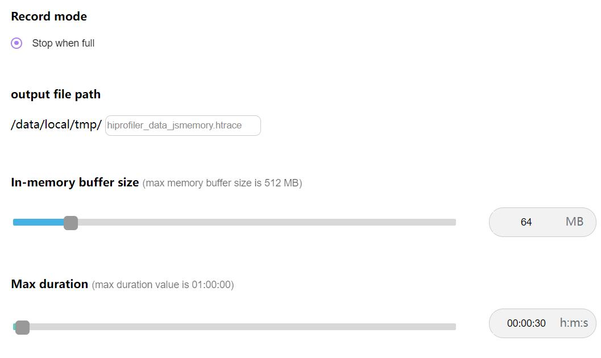
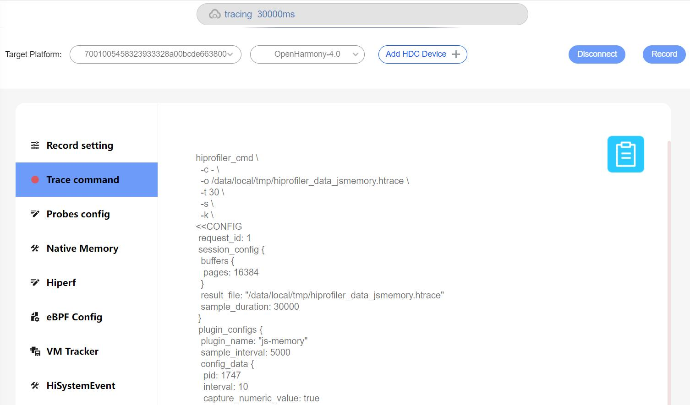
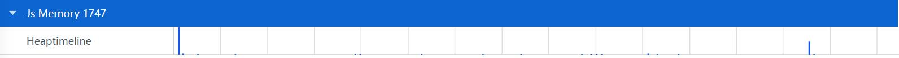
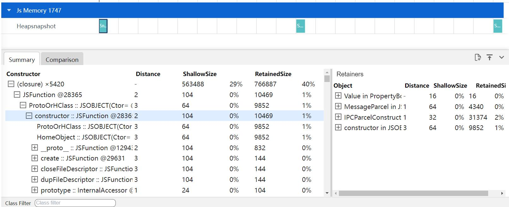
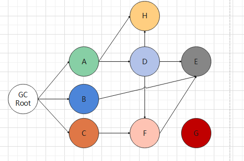
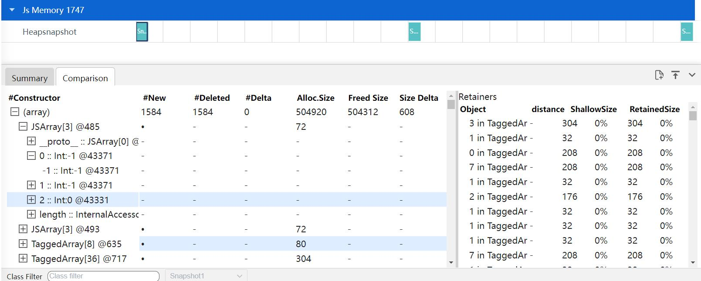
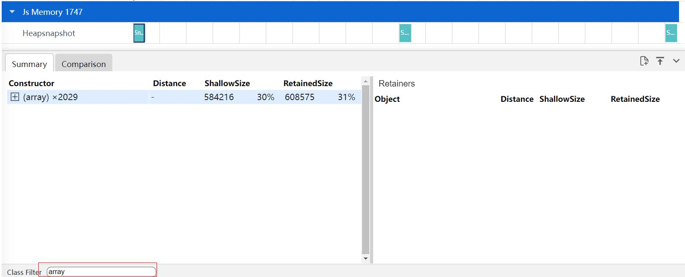

Js Memory抓取和展示说明
Js Memory是查看程序中存量内存的情况。
Js Memory的抓取
Js Memory抓取配置参数

配置参数说明：
- Process：设置抓取的进程ID，此处以1747进程号为例。
- Heap snapshot：堆快照性能分析会显示网页的JavaScript对象和相关DOM节点中内存分配情况。
- include numerical values in capture：在快照中添加数字。
- Interval：抓取的时间间隔。
- Allocation insteumentation on timeline：分配时间轴显示了插桩的JavaScript内存分配随时间变化的情况。
- record stack traces of allocations(extra performance overhead)：录制各项分配的堆栈轨迹(会产生额外的性能开销)。
再点击Record setting，在output file path输入文件名hiprofiler_data_jsmemory.htrace，拖动滚动条设置buffer
size大小是64M，抓取时长是30s。

点击Trace command，就会根据上面的配置生成抓取命令，点击Record抓取，抓取过程中会显示抓取时长。

Js Memory展示说明
将抓取的jsmemory文件导入到smartperf工具中查看，查看程序中存量内存的情况。
Js Memory泳道图展示类型
堆快照类型文件的泳道图展示。

-
Heapsnapshot：堆快照性能分析会显示网页的JavaScript对象和相关DOM节点中内存分配情况。
时间轴上分配插桩类型文件的泳道图展示。

-
Heaptimeline：分配时间轴显示了插桩的JavaScript内存分配随时间变化的情况。
Js Memory泳道图的框选功能
可以对内存的数据进行框选，框选后在最下方的弹出层中会展示框选数据的统计表格，总共有两个tab页。
Summary的Tab页，主要显示了总览视图，通过类的名称来分组显示对象。

-
Constructor：类创建的所有对象，其中 第一层为类名，后面的x表示该类创建了多少实例。 第二层为该类的实例名+id，id唯一。 第三层以下为实例中的成员变量。 -
Distance：使用节点的最短简单路径显示到根的距离。
例如下图其中GC Root为根节点，distance为0,G为上次GC之后新申请内存的实例，distance为100000000。在界面上显示为-，A、B、C、D、E、F、H为调用节点；以E为例，从A->D->F>E,distance为4，从A->D->E，distance为3;从B->E,distance为2,遵循最小distance原则，E的distance为2,同理D的distance为2,F的distance为2,H的distance也为2。
其中第一层类的distance为该类所有实例中最小的distance,如果有实例的distance为-，类的distance也为-(-表示没有被root节点引用的实例，如下图的G)
 -
ShallowSize：是指实例自身占用的内存, 可以理解为保存该'数据结构'需要多少内存 例如下面的代码：
class X { a: number = 0; b: boolean = false; c: ChartStruct = new ChartStruct(); }
假设当前是在64位系统, 对于类X来说, 一个X实例的Shallow Size为:
类定义的8byte
没有继承其他类, 所以没有父类fields
a,b变量为基本类型number,boolean型, js中都为8byte;
c变量是引用类型, 和它是否指向具体实例无关, 固定占4byte
-
RetainedSize：Retained Size含义为表示当一个实例被GC回收时, 可以同时被回收的实例的Shallow Size之和。
-
如上图所示；假设所有的节点Size都为1,按照A->B->C的顺序回收。
- 当A被回收时，H被D调用，先不回收，D没有被调用，D回收，由于D被回收，H没有被调用，H回收，由于F被C调用，E被B、F也调用了，所以不能被回收,此时A的Retained Size为3,D的Retained Size为2, H的Retained Size为1。
- 当B被回收时，由于E被F占用，所以E不会被回收，此时B的Retained Size为1。
- 当C被回收时，F没有被调用，E没有被调用,所以都会被回收，此时C的Retained Size为3，F的Retained Size为2, E的Retained Size为1。
-
如上图所示；假设所有的节点Size都为1,按照A->B->C的顺序回收。
Comparison的Tab页，主要显示了比较视图，显示两份快照间的不同之处，主要比较类创建与释放的实例数量。

-
#Constructor：类创建的所有对象，类名与id相同视为同一个实例，其中 第一层为类的比较，每个时间点的对比其他时间点的类创建与销毁了哪些实例。 第二层为实例，由于展示的是创建或者销毁实例，固只展示Size大小。 第三层以下为实例的成员变量，不存在比较信息。 -
#New：新增的实例数量，圆点代表有意义的数据，下划线代表无意义的数据。
-
#Deleted：删除的实例数量。
-
#Delta：#New减去#Deleted的数量。
-
Alloc.Size：新增实例的Size。
-
Freed Size：删除实例的Size。
-
Size Delta：Delta的Size。
Js Memory的辅助信息功能
在Summary和Comparison的Tab页，选中左边实例，右边Retainers的Tab页会显示多少个实例引用了左边选中的实例。

-
Object：引用的实例。
-
Distance：使用节点的最短简单路径显示到根的距离。
-
ShallowSize：所有对象的本身的内存大小之和。
-
RetainedSize：对象以及其相关的对象一起被删除后所释放的内存大小，同一组对象之间的最大保留大小。
Js Memory详细显示的过滤功能
在下方的Class Filter中输入类名，可以对类名进行过滤，如下图输入array，会过滤出类名是array的相关数据。
